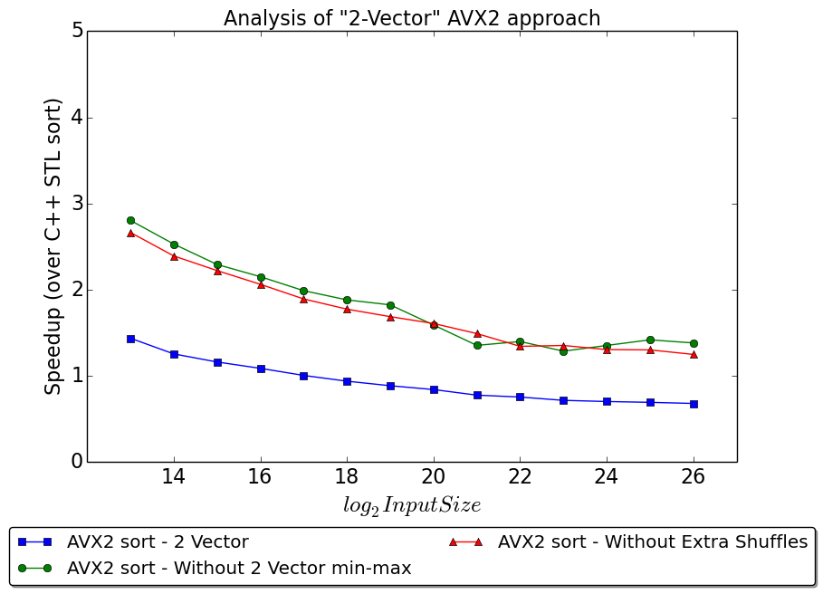
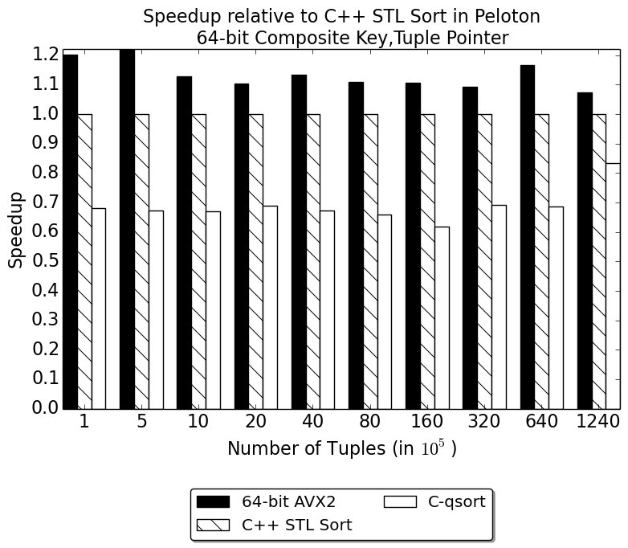
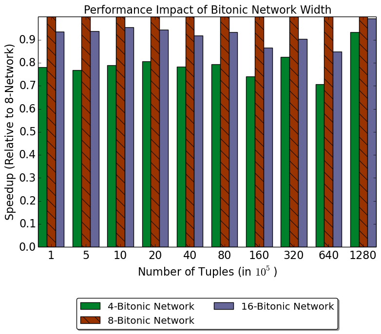

We also have a independent repository for the SIMD sort independently: avx2-merge-sort
Proposal
Summary
We present an efficient implementation and analysis of merge sort with 256-bit AVX2 based on the CMU database project Peloton. The objective is to implement an optimized Merge-Sort operator into the Peloton in-memory database system made by \href{https://github.com/cmu-db/peloton}{CMUDB}. We divide the sorting towards sort phase and merge phase. For sort phase, we build a sorting network which could sort 64 element in parallel each time and a matrix transpose network to transpose the result for merging. In addition, our algorithm performs an efficient multiway merge utilizing bitonic-merge network. Finally, we incorporate the parallel merge-sort design in the operator we build for Peloton and evaluate the performance gains and utilization that technique offers.
Background
Peloton is an in-memory database project that is developed by the CMU Database Group based on the RDBMS model with ACID guarantees. Since this system does not use the disk for storing and retrieving data, it needs to address bottlenecks associated with the memory hierarchy (caches), memory access patterns, concurrency control across multiple cores in order to utilize the available hardware effectively. Peloton, being a HTAP (Hybrid Transaction Processing) system, should be capable of handling both OLTP and OLAP workloads. OLAP involves long running queries that operate on large volumes of data across multiple relations. Joins are in important class of operators for OLAP workloads and OLAP joins have good scope for parallelization since they work on large volumes of data in memory. This approach to database parallelism is known as > intra-query parallelism. Presently, Peloton does not support intra-query parallelism for any class of queries. Based on the relevance to what we learnt from this course and the approaches followed by existing database literature, we chose to work with sort-merge join.
A join algorithm accepts two input relations and merges corresponding tuples that match the predicate applied on the join attributes of the two relations. The classical Sort-Merge join algorithm consists of 3 phases -
An optional partitioning phase - this phase is used to partition the input relations, which could be in the form of dividing the input load across different workers or cores.
The sort phase - this phase sorts the tuples of input relations based on the join key
The merge phase - this step scans through the sorted runs of the input relations in lock-step and merges a pair of tuples if the join predicate is satisfied. Assuming no duplicate tuples in either relation, merge can be performed in a single pass.
The biggest challenge for parallelization for the sort phase is there are a lot of data dependencies in all sorting algorithms. The work done in Oracle and Intel's "Fast Join Implementation on Modern Multi-core CPUS" and ETH's "new optimization and results for radix hash join" use a cache-conscious approach for the sort phase. These approaches implement merge sort and apply a different implementation for merge sort depending on the level in the memory hierarchy. For register-level and cache-level sorting, these papers claim that using SIMD is important to achieve good speedup and hardware efficiency. The work done in Hyper claims that SIMD-based sorting isn't necessary to achieve good performance and processor scalability for sort-merge join. They propose a NUMA-aware implementation that incurs the partitioning phase to chunk the input relations across NUMA-sockets, produces core-local sorted runs of these chunks and applies the join predicate for each chunk of the first relation against all chunks of the second relation. The rationale for this approach is that complete traversal of the second relation's chunks will not happen for any given first chunk, since they are already sorted. They also state that the memory prefetcher can mask the interconnect latency when sequential access is carried out on non-local sockets. Our project would be focussed towards integrating the key ideas introduced by these approaches - using a SIMD-based low-level sorting implementation and NUMA-aware data partitioning and evaluating the performance and scalability of our implementation as we add these features
The Challenge
We use AVX2 CPU intrinsics to implement cache-conscious sorting with SIMD. Since AVX2 offers low-level primitives it could be fairly complicated to implement a fully-functioning sorting network. We also need to be careful about the type of AVX2 instructions we use; an implementation with unnecessary calls to gather and scatter can limit the performance of the implementation. The workload involves large relations that need to be sorted, which inherently comes with a high communication-to-computation ratio, since large tables will certainly not fit a single memory region. Since sorting is an operation that attempts to establish global order across distributed elements, reducing and optimization the communication patterns would be the primary challenge. None of the papers discussed in the previous section have a perfect solution for this. Instead, they rely on data access patterns and instructional similarity in some operations of join to make better utilization of the hardware.
Resource
We are working based on the code base of the CMU in-memory DBMS project Peloton. For SIMD merge-sort method, we plan to refer to the oracle and intel's sort merge work
C. Kim, T. Kaldewey, V. W. Lee, E. Sedlar, A. D. Nguyen, N. Satish, J. Chhugani, A. Di Blas,and P. Dubey. Sort vs. hash revisited: fast join implementation on modern multi-core cpus.Proceedings of the VLDB Endowment, 2(2):1378–1389, 2009.
For the numa-aware improvement, we plan to refer to the method provided by the Hyper work
M.-C. Albutiu, A. Kemper, and T. Neumann. Massively parallel sort-merge joins in mainmemory multi-core database systems.Proceedings of the VLDB Endowment, 5(10):1064–1075,201.
For the partitioning improvement, we plan to refer to the Radix Hash Join method
C. Balkesen, J. Teubner, G. Alonso, and M. T. ̈Ozsu. Main-memory hash joins on multi-core cpus: Tuning to the underlying hardware. InData Engineering (ICDE), 2013 IEEE 29thInternational Conference on, pages 362–373. IEEE, 2013.
The parallel data lab provides PDL clusters for us to do the evaluation. There are nodes of NUMA architecture inside so as we can test the numa-aware implementation based on that. Also, we plan to use TPC-h benchmark to compare the scalabilities among the non-paralel , non-NUMA-aware SIMD and NUMA-aware versions of peloton.
Goal and Deliverables
Minimum Goal: We set the minimum goal as the implementation of the logistic of the SIMD version merge-sort, together with a thorough performance analysis for that. We don't expect scalability for the minimum goal. The deliverable for this goal includes a consistent and runnable SIMD merge-join mechanism for peloton, and a report comparing and analysing of the performance among the sequential and parallel version. We expect a B score for reaching minimum goal.
Main Goal: The main goal is an scalable parallel merge-sort join mechanism of Peloton, together with the evaluation and performance analysis. Compared to minimum goal, we want to further optimize the method so as the performance of sort-merge join could scale when number of cores increase. The deliverable for this goal includes the scalable sort-merge join mechanism based on SIMD and an through evaluation report of that. We expect an A scrore for reaching main goal.
Stretch Goal: We have two stretch goals. The first stretch goal is to implement a NUMA-aware merge-sort join mechanism together with the evaluation showing the benefit gained from that. The second stretch goal is to implement the radix hash join partitioning method to get further performance improvement. The deliverable for this phase is the implementation together with an evaluation based on machine with NUMA architecture. We expect an A+ for accomplish either of the stretch goals.
Platform Choice
We use PDL cluster as the evaluation machine because it provides NUMA node. We choose C++ as the programming language since it has SIMD lib and it is the language of Peloton.
Project Checkpoint
Revised Schedule
| Week Number | Tasks |
|---|---|
| 1 |
|
| 2 |
|
| 3 |
|
|
|
|
| 4-1 |
|
|
|
|
| 4-2 |
|
|
|
|
| 5-1 |
|
|
|
|
| 5-2 |
|
| 6-1 |
|
|
|
|
| 6-2 |
|
Design and Implementation
Sequential Merge-Sort Join
In Peloton's plan tree, a merge-sort join could be represented as a merge-sort-join node. Each child node of it is a Merge-sort operator, which returns one tier at each call. The merge-sort join operator call the sorting operator of both sides accordingly and generate the final result.
Sorting Network

In sorting phase, we use a hard-coded sorting network to perform sort on fixed numbers of values in parallel. A common case of sorting network is the 5-comparisons network for 4 * 4 elements sorting. In our implementation, the register size of avx2 could be 256 bit, thus can hold 8 elements, thus we utilized the Bose-Nelson Algorithm which sorts 8 * 8 elements in parallel. The algorithm is shown as the picture and it has 19 comparator and 7 rounds. we perform the following steps.
The sorting network we implement is shown in Figure 1. The horizontal wires represent data flow (from left side to right side). While the vertical wires represent minmax comparator which put smaller data to the upper line and larger data to the lower line. Each row of the red boxes in the picture represents a register with 8 elements inside. Before the sorting phase, we divide input data into 8*8 matrices and put them into 8 avx2 registers as the input of the sorting network. The 8 column of the input matrix will go through the sorting network concurrently, and produce 8 sorted column in the output registers.
Matrix Transpose
After the sorting network, we get 8 sorted columns. However, we need 8 sorted array stored respectively in 8 avx2 registers to conduct next phase. Thus we need to transpose the result matrix so as each input line of size 8 is sorted. The idea to implement transpose method is to interleave two adjacent matrix row first, and then shuffle to pick the candidate elements for each row. Take a 4*4 matrix {{1,2,3,4},{5,6,7,8},{9,10,11,12},{13,14,15,16}} as an example, after the interaction of (row0, row1) and (row2,row3), the matrix would become {{1,5,2,6}, {3,7,4,8},{9,13,10,14},{11,15,12,16}}. Then we use shuffle to pick the {1,3,5,7} from {1,5,2,6} and {3,7,4,8}, we can get the first result row. The following rows can be generated in the same way.
For 8*8 matrix, we first use interleave to combine each two adjacent elements in the same column together. In the second step, we use shuffle to combine two result lines of interleaving and gather 4 elements of a same line in one register. In the final step we call shuffle again and transpose each column to rows.
4*4 Matrix Transpose Network
input: 4*4 Matrix sorted in column (each row represented by a register, namely r0-r3)
result: 4 sorted array in register row}
t0 → interleave_first(r0, r1)
t1 → interleave_first(r0, r1)
t2 → interleave_first(r2, r3)
t3 → interleave_first(r2, r3)
a → shuffle<0, 1, 4, 5>(x, z)
b → shuffle<2, 3, 6, 7>(x, z)
c → shuffle<0, 1, 4, 5>(y, w)
d → shuffle<2, 3, 6, 7>(y, w)
AVX2 rearranging instructions used for Matrix Transpose
| Instruction | Cycles | TPut |
|---|---|---|
| _mm256_unpacklo_ps | 1 | 1 |
| _mm256_unpackhi_ps | 1 | 1 |
| _mm256_shuffle_ps | 1 | 1 |
| _mm256_permute2f128_ps | 3 | 1 |
Bitonic Sort
After the sorting phase is completed we receive runs of elements that are locally sorted. These runs need to be merged to eventually produce the globally sorted array. The merge phase goes through multiple iterations - at each phase we merge twice the number of elements than in the preceding phase. We have $O(log n)$ merge phases and each phase makes multiple calls to the Bitonic Merge function, making it the component that directly influences the overall performance of the algorithm. Bitonic merge consists of a collection of min-max and shuffle operations that make it conducive for vectorization.
A general Bitonic Merge network takes as input two equally-sized sorted arrays. Let us assume that the size of these arrays is 8. The second array is reversed. The corresponding elements of the two arrays are compared to generate two output arrays that have the minimum and maximum vales at each position. By reversing the second array, the algorithm is able to guarantee that at the end of this first min-max pass all the 8 elements in the "min"-array are smaller than all the elements in the "max"-array. In the next step, within each array we find the min and max between the 1st and 5th element, 2nd and 6th element and so on. While the previous phase compared against elements that were 8 locations apart, this phase compares elements that are 4 locations apart. We again a create separate array for min and max values as before. After this step, within each array, the first 4 elements are guaranteed to be smaller than the last 4 elements. Further, all the elements in the min-array are still smaller than all the elements in the max array as no data exchange happened between these two arrays since the previous min-max phase completed. We continue recursively to perform smaller range min-max swaps to eventually produce two arrays that store elements in a globally sorted order. This algorithm is guaranteed to complete in log2 n + 1 minmax exchanges.
Algorithm 3 illustrates the steps involved in scalar bitonic merge. Implementing this in AVX-2 is not so straightforward. Consider the case of merging two AVX-2 registers. Each register contains 8 packed 32-bit signed integers that are sorted by the sorting network discussed earlier. We can directly apply min-max across these two registers to generate the two output registers ra and rb where all elements in ra are smaller than or equal to all the elements in rb. The subsequent steps of Bitonic merge require sorting within each register. There are no instructions in the AVX-2 instruction set that can directly perform intra-register sort. If we want to use the min-max registers from before, we need two input registers. Hence the strategy followed is to create a shuffled copy of the given register that needs to be sorted. Considering the register ra, a shuffled copy ra' for 4-range compare is created, such that
if ra = {a, b, c, d, e, f, g, h}, we first compute -
min(a,e); max(a,e); min(b,f); max(b,f); min(c,g); max(c,g); min(d,h); max(d,h)
then, ra' = {e, f, g, h, a, b, c, d}


We can now apply min-max across (ra, ra'). Since min-max is a commutative function, minmax(a,e) = minmax(e,a). The result we get is -
min({a, b, c, d, e, f, g, h}, {e, f, g, h, a, b, c, d})
= {min(a,e), min(b,f), min(c,g), min(d,h), min(e,a), min(f,b), min(g,c), min(h,d)}
The first 4 elements are same as the last 4 elements. Similarly,
max({a, b, c, d, e, f, g, h}, {e, f, g, h, a, b, c, d})
= {max(a,e), max(b,f), max(c,g), max(d,h), max(e,a), max(f,b), max(g,c), max(h,d)}
The result that we want for the next step (i.e. 2-range compare) is
new_r = {min(a,e), min(b,f), min(c,g), min(d,h),
max(a,e), max(b,f), max(c,g), max(d,h)}
We use an additional shuffle instruction that accepts two registers as input, discards half the elements, shuffles the remaining half to output the new 8 element register.
Scalar 4-by-4 Bitonic Merge Network
Input: Two locally sorted 4-element arrays - a and b}
Result: Two globally sorted 4-element arrays - a' and b'}
\\4-range comparison
br → reverse(b)
a1 → pairwise_min(a, br)
b1 → pairwise_max(a, br)
\\2-range comparison
a2 → pairwise_min(a1[:2], a1[2:])
a3 → pairwise_max(a1[:2], a1[2:])
b2 → pairwise_min(b1[:2], b1[2:])
b3 → pairwise_max(b1[:2], b1[2:])
\\1-range comparison
a4 → pairwise_min(a2[0], a2[1])
a5 → pairwise_max(a2[0], a2[1])
a6 → pairwise_min(a3[0], a3[1])
a7 → pairwise_max(a3[0], a3[1])
b4 → pairwise_min(b2[0], b2[1])
b5 → pairwise_max(b2[0], b2[1])
b6 → pairwise_min(b3[0], b3[1])
b7 → pairwise_max(b3[0], b3[1])
a' → a4 + a5 + a6 + a7
b' → b4 + b5 + b6 + b7
//AVX2 Intra Register Sort
void intra_register_sort(
__m256i& a) {
// 4-range compare
a1 = avx2_permute(a);
mina = avx2_min(a, a1);
maxa = avx2_max(a, a1);
a = avx2_blend(mina, maxa);
// 2-range compare
a1 = avx2_shuffle(a);
mina = avx2_min(a, a1);
maxa = avx2_max(a, a1);
a = avx2_unpack(mina, maxa);
// 1-range compare
a1 = avx2_shuffle(a);
mina = avx2_min(a, a1);
maxa = avx2_max(a, a1);
a = avx2_blend(mina, maxa);
}
The rest of the Bitonic Merge procedure proceeds in a similar manner of shuffling to align min-max candidates for each phase. While this algorithm enables us to use vectorized instructions, half the comparisons made are redundant. This reflects in the performance that we discuss in the evaluation section later. This intra-register sorting approach is depicted in the figure above. The high-level AVX2 semantics used to implement intra-register sort is shown in "AVX2 Intra Register Sort" above.
The high-level AVX2 instructions used in the implementation are min, max and shuffle. The exact implementation of min and max depends on the input that we are sorting. For 32-bit signed integers, min and max can be implemented using the _mm256_min_epi32 and _mm256_max_epi32 instructions. Shuffles can be implemented using the permute, blend, unpack, shuffle class of instructions. The shuffle class consists of light (typically 1 cycle latency) instructions that can be used to move elements around only within 128-bit lanes of the 256-bit register that they belong to. The unpack class consists of light instructions that take in two registers and interleaves elements. These instructions typically execute in one cycle, as well. The blend class includes instructions that takes in a pair of registers and picks an element either from the first or second register depending on the flags provided. These instruction execute in 1-2 cycles. Finally, the permute instructions can either shuffle elements across 128-bit SIMD lanes or arbitrarily shuffle two 256-bit registers. These instructions are the most expensive class and typically execute in 2-3 cycles. We sparsely use these instructions in our implementation.
The actual instructions used are listed in Table below
| Instruction | Cycles | TPut |
|---|---|---|
| _mm256_unpacklo_ps | 1 | 1 |
_mm256_unpackhi_ps | 1 | 1 _mm256_shuffle_ps | 1 | 1 _mm256_shuffle_epi32 | 1 | 1 _mm256_blend_epi32 | 1 | 0.33 _mm256_permute2f128_ps | 3 | 1 _mm256_permutevar8x32_epi32 | 3 | -
Merge Phase
We cannot increase the size of our bitonic merge network as we increase the merge-sizes. This is mainly because the complexity of the network increases in a super-linear fashion as the input sizes increase. For this reason, we perform higher-order merges in units of bitonic merge, as illustrated by Algorithm 3. This algorithm follows the iterator model, wherein, it loads a vector amount of data at a time. The next chunk function abstracts out the pointer arithmetic associated with loading the next vector of data to be used by AVX-2. Similarly, store chunk abstracts out the pointer arithmetic associated with storing a vector of data into the output buer. When we merge two registers, we are guaranteed that the lower half of the output elements are the smallest elements available at that instant of execution. However, there is no guarantee that the larger half is the second-smallest set of elements that are presently available. We need to load the next chunk of data to nd the next smallest sequence. Since we have two sources to load from viz. a and b, we pick that source which has the smallest element at the current iterator position. The next chunk is loaded into ra and we apply the next iteration of bitonic merge. The standard merge algorithm comes with edge cases associated with consuming the remainder elements of an unnished input array, which can be implemented in a similar manner to the core design that is explained here.
Higher-order Merge - Merge Sort
Data: Two locally sorted arrays of equal length - a and b
Result:Single globally sorted array - out
ra \leftarrow avx2\_load(next_chunk(a))
rb \leftarrow avx2\_load(next_chunk(b))
Do {
bitonic_merge(ra, rb)
store_chunk(out, avx2_store(ra))
If (curr_ele(a) < curr_ele(b)) {
ra → avx2_load(next_chunk(a))
}
else {
ra → avx2_load(next_chunk(b))
}
} while(a or b has no more elements)
Handle merge "edge-cases" in a similar manner
We had multiple implementations prior to this implementation that used a different set of (less efficient) AVX-2 instructions to perform the same task. The implementation discussed here is the best one we were able to achieve, in terms of performance.
Integration into Peloton
The sub-sections so far discuss the building blocks of the basic implementation for vectorized merge- sort with 32-bit signed integers. Databases oer the ORDER BY query to sort a table based on a column or set of columns and perform subsequent operations like join, over the sorted table. Our goal is to integrate this implementation into Peloton and execute this implementation when a query to sort a single column of integer data type is received.
When the ORDER BY query is sent by a client, Peloton parses the query into a query plan-tree that embeds the sequence of operations along with the data arguments required to execute the query. The plan-tree is handed over to the executors that traverse the plan-tree and dynamically invoke the appropriate executor that has the execution logic necessary to execute a given plan node. The OrderByExecutor in Peloton identies the columns to be sorted and creates a new structure for every tuple that stores a pointer to the tuple and its block-oset coordinates in the storage layer. It then deploys C++ STL sort and physically materializes the results.
Over and above sorting 32-bit integer keys, we now need to extend our AVX-2 sort implementation to maintain a reference to the tuple that it belonged to. The work done in [?] discusses two approaches two accomplish this task
- The first approach is to maintain two separate arrays of 32-bit elements. The first array stores all the sorting keys. The standard minmax and shuffle steps are performed here. The second array stores the pointers to the corresponding tuples. We don't actually apply the minmax operations to this array, but we mirror all the shuffles and other data movement that occurs in the key array. We now require a mask from the min-max operation, so that we can mirror data movement caused due to minmax on the tuple-pointer array. Hence, we had to substitute the low latency avx2 min and max instructions with a low latency compare and four medium-latency blends. The rationale for this approach is that we double the number of instructions, but, complete effective work for 8 elements at a time.
- The second approach is to bunch the key and tuple pointer together into a 64-bit composte element. We want the min-max operations to only be influenced by the key and not the tuple pointer.,By storing the key in the upper 32 bits we can ensure this. However, the AVX-2 intrinsics do not offer a 64-bit minmax instruction. Due to this, we had to implement a mask-based minmax function even for this implementation. The rationale for this implementation is that we require a fewer number of instructions.
While Peloton has 64-bit tuple pointers, we assume that the table can be indexed with 32-bit pointers to simplify the AVX-2 implementation. We modified the OrderBy Executor to use our AVX-2 sort when all the constraints (single sorting column, 32-bit int keys, table has at the most $2^{32}$ tuples) are met.
Evaluation
The first set of experiments we deploy are intended to directly benchmark our AVX-2 sort implementation against C++ STL Sort. The simple benchmark populates an array with randomly generated signed integers. We sort the same array with STL sort and our sort and compare the execution times.
Evaluation Setup
We use PDL cluster as the evaluation machine. The Processor of PDL node is Intel(R) Xeon(R) CPU E5-2620 v3 @ 2.40GHz with Haswell microarchitecture. Each of the node has 12 cores and 2 threads per core. The memory size is 260GB and L3 cache size is 15MB. We implement a micro benchmark to test the throughput of sorting random-generated input array of different size. For the speed of Peloton's executor, we developed a microbenchmark that loads a table and evaluates the OrderByExecutor.
32-bit sort implementation
In this benchmark we scale the input size from 8000 elements to a Billion elements. Our initial implementation didn't show good performance improvement over STL sort - with 8k elements we were approximately 2 times faster, while we were 0.9x slower with 1 Billion elements. To this implementation we added the following optimizations:
- Better code arrangement - We inlined more functions, unrolled some loops and opened up some functions to issue more of the same instructions with different registers to exploit instruction-level parallelsim to the best possible extent
- Aligned loads - We initially used _mm256_maskload_epi32 to load data located at any arbitrary address into registers. However, this turned out to be one of the bottlenecks in our implementation and discovered that AVX-2 performs better with aligned loads. Specifically, the data needs to be 32B aligned to avoid maskload. The simples way to guarantee aligned loads is to have the first element in the input array allocated on a 32B-aligned address and pad the array to ensure that its length is always a multiple of 8. Using posix_memalign() we can perform 32B-aligned memory allocation and pad the array to round to the nearest multiple of 8.
After adding these two optimizations, the performance of our AVX-2 sort significantly improved. With 8k elemnts we observeed a 4.5 times speedup over STL sort. We are 2 times faster than STL sort even with a billion elements. As the input size increases we start getting memory-bandwidth bound. This explains why there is a decay in the performance.
We used the Intel Architecture Code Analyzer (IACA) tool to profile our Bitonic merge implementation (since majority of the execution time is spent on it). We found that 18.45 cycles are required to execute this block on a Haswell Processor, which corresponds to 1.15 cycle per element. We also observed tht even heavier instructions like permutes were able to complete in 1 cycle through pipelining. The main bottleneck for throughput was found to be "InterIteration" which indicates inter-loop dependencies that we can't avoid.
The Two-Vector Approach
Once we optimized our 32-bit sort implementation our next goal was to find a way to track database tuples along with the sorting keys. This subs-ection evaluates the first of the two approaches discussed earlier. Based on the work done in existing literature, we didn't expect more than a 2 times slowdown from the 32-bit implementation. However, as the figure below shows, we got worse than 2x slowdown with this implementation. We suspected that this issue was due to the heavier minmax computations and doubled volume of shuffle instructions. We expected minmax to have a less adverse impact on the performance compared to increased shuffles, since we expected the blendv instructions in minmax to get pipelined. To validate this hypothesis, we made two new versions of the 2 vector approach. The first kept the increased number of shuffle instructions but reverted to the AVX-2 minmax instructions. The second kept the mask-based minmax and discarded the shuffles for the tuple-offset array. Note that these versions do not generate correct result - they were purely meant to diagnose our performance issues. As Figure figure below shows, we get an almost similar improvement in performance when either feature is discarded. This was counter-intuitive as the raw number instructions used to implement shuffles exceed the the raw number of instructions used to implement minmax.
Profiling with IACA showed that Bitonic merge now required 76 cycles - which is a 4x slow down compared to the 32-bit implementation. Against our expectations, we found that the blendv instructions don't get pipelined. This is because they all require a specific hardware unit (referred to as "Port 5" in the trace) to execute. Each blendv instruction consumes 2 cycles. Since minmax is invoked 4-times in 8-by-8 Bitonic merge, this 9-cycle minmax contributes 36 cycles (around 50\% of the cycles) in Bitonic merge. 74\% of the cycles are spent on Port 5 - as many other AVX-2 instructions depend on it. Hence, it was identified as the chief bottleneck in the implementation.
The 64-bit approach
 The other approach that we dicussed earlier is to group the sorting key and its tuple offset pointer together as a 64-bit element. Unlike the two vector approach, we do not need to double the number of instructions within one loop of bitonic merge. However, the effective throughput of these instructions are halved as they only yield half the number of elements per call.Further, the AVX-2 intrinsics do not provide any instructions for 64-bit minmax. This required us to use mask-based minmax and it gives us a similar performance penalty to that discussed in the two-vector approach. Since each register can now pack only 4 elements at a time, our bitonic merge network requires slightly fewer shuffle instructions than our original 32-bit implementation. Despite this we expect a similar slowdown to the 2 vector approach, since it uses the mask-based minmax. We integrated this implementation into the OrderByExecutor of Peloton and evaluated it by developing a microbenchmark in Peloton that loads the workload into the tablea nd sorts it using STL sort and our sort implementation. We vary the table size from 100k tuples to 100 Million tuples.
The figure shows that our AVX-2 sort implementation is able to achieve a 10-20\% speedup over STL sort and a 2x speedup over qsort(). Furthermore, our performance gains do not decrease as we scale the number of tuples as we were able to optimize loads and stores in Peloton and reduce the dependence of the implementation on memory bandwidth.
Effect of Bitonic Merge Network Width
Finally, we wanted to evaluate the impact on performance that the width of the Bitonic merge network has. Width of the network is defined in terms of the size of input vectors being merged. A 4-width network merges two sorted arrays that have 4 elements each, the 8-width network merges two sorted arrays that have 8 elements each, etc. We evaluate this using the 64-bit implementation using the same microbenchmark that was mentioned in the previous sub-section. The wider the network, the more complex its implementation becomes (in-terms of the number of minmax and shuffle instructions required to complete the merge). In Figure above we plot the relative performance (in terms of execution time) for 4, 8 and 16 width networks. A 4-width network has the least relative performance primarily because the hardware is underutilized. The 8-width network has the best relative performance. While the 16-width network has better utilization of the hardware than the 4-width case, the increased complexity in the network results in slower performance relative to the 8-width network.
Findings and Conclusion
Findings
To summarize all the surprising findings we had mentioned through the report:
- AVX-2 does not offer an instruction to find the min and max amongst two registers populated with 64-bit elements. This directly affected the performance we could achieve with sort.
- Certain instructions like blends and shuffles can only be executed by one hardware unit (on a Haswell processor). This unit becomes a significant bottleneck, especially when the core minmax implementation uses these instructions.
- Good scheduling of instructions along with aligned loads offer significant performance benefits for AVX-2
Conclusion
Through our experiences of working with AVX-2 in this project we can conclude that a well-written AVX-2 merge-sort implementation that is bandwidth-oblivious can potentially gain a 3-4x speedup over C++ STL Sort. However, it is inevitable to take a performance penalty when the keys are sorted for a table in a database. While STL sort is bottle-necked by the comparator function, AVX-2 merge sort is bottlenecked by the number of elements that can be sorted in a data-parallel manner for a fixed number of instructions. For this reason, there is no decay in performance from 32-bit to 64-bit sort for STL's implementation. If the AVX-2 instruction set did contain 64-bit min-max instructions we project that our implementation can achieve a 1.5x-2x speedup when deployed in the OrderByExecutor. Increasing the width of a sorting network isn't the right way to go to improve the performance of this implementation. Using bandwidth-oblivious techniques like single-threaded multiway-merge through FIFO queues is the way to overcome bottlenecks due to the memory bandwidth.
Authors and Contributors
The project is planed to be done evenly by Siddharth Santurkar (@sid1607) and Lei Qi (@xhad1234).